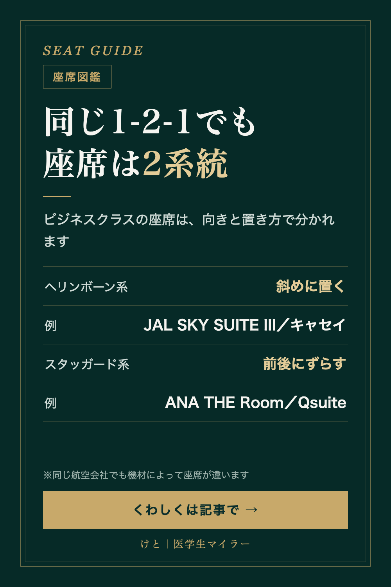

SEAT GUIDE
ビジネスクラスの座席「1-2-1」の2つの系統｜ヘリンボーンとスタッガード
2026/09/25 時点の情報
ビジネスクラスの座席が「1-2-1」と書いてあると、どれも同じ座席に思えます。でも実は、座席の向きと置き方で、大きく2つの系統に分かれます。

ヘリンボーン系（リバースヘリンボーン）
席を斜めに置く配列です。リバースヘリンボーンでは、窓側の席は窓のほうを向き、中央の2席は足元が中央で向き合います。
- キャセイパシフィック航空（A350-1000、アリア・スイート）
- JAL SKY SUITE III（787-9）
スタッガード系
席を前後にずらして並べる配列です。前向きのまま位置をずらす製品と、前向きと後ろ向きの席を互い違いに置く製品があります。
- ANA THE Room（777-300ER）
- カタール航空 Qsuite
どちらも「1-2-1」で、全席から通路に出られる
どちらも「1-2-1」にでき、全席が通路に直接出られる配列ですが、席の向きと位置が違います。
日本語の記事では「ヘリンボーン」「リバースヘリンボーン」のどちらの表記も見かけるので、調べるときは気をつけたいところです。
同じ航空会社でも、機材で座席が違う
たとえばJALの787-9には、SKY SUITE IIIを備えた機材と、別の座席の機材があります。カタール航空も、A350-1000はQsuiteですが、787-9はQsuiteではない別のドア付き座席です。
「1-2-1」という数字だけでは、座席のことは分かりません。予約する前に、座席の名前で調べて、向き・ドアの有無・機材を確認するのがおすすめです。
※2026年9月時点の公開情報（報道・航空会社の発表・座席の解説記事）をもとにしています。座席の細かい角度や間隔は製品ごとに違います。